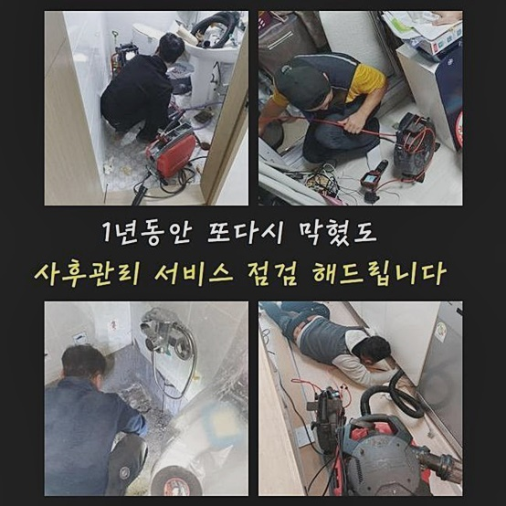
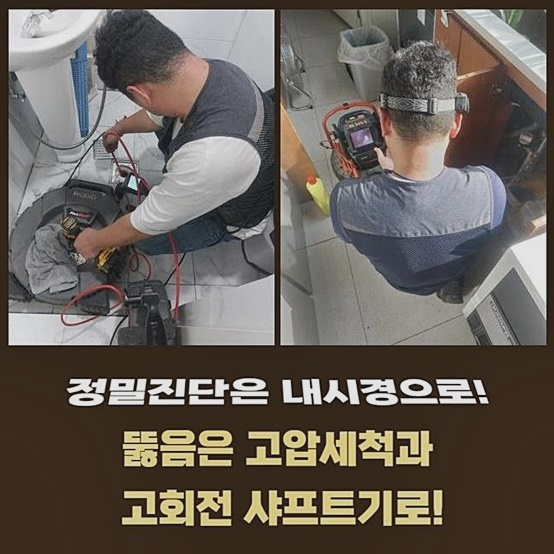
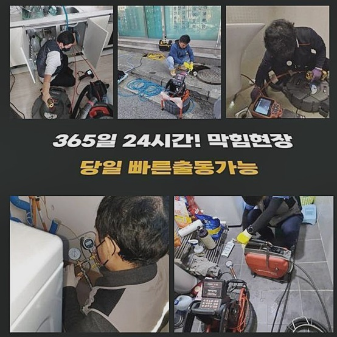
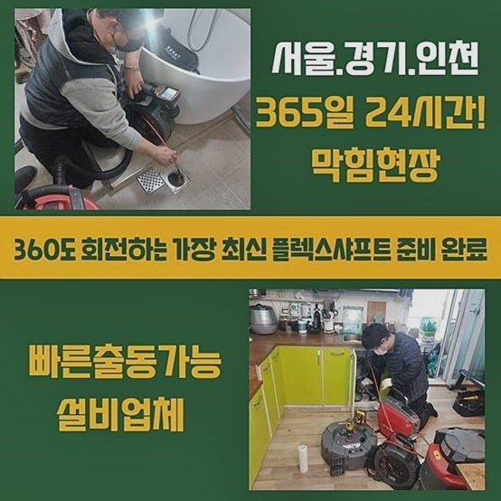
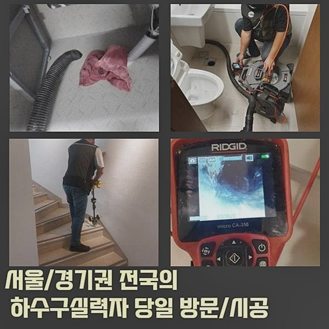
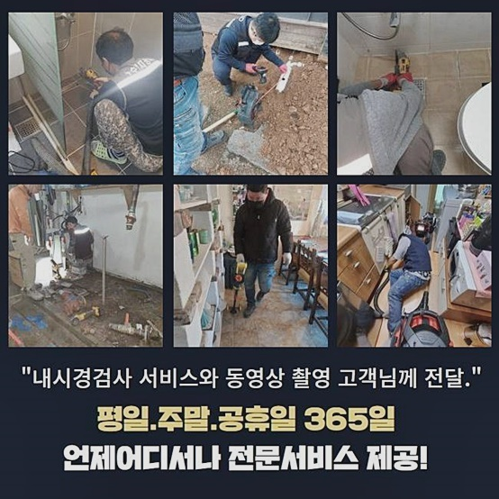

🏠 양주 광사동하수구막힘 고암동 하수구청소 출장설비
용인시 처인구 배관막힘 전문 시공 후기

📋 작업 개요
- 위치: 용인시 처인구, 수원시 영통구, 화성시 동탄
- 서비스 유형: 배관막힘, 하수구청소, 누수수리, 고압세척, 내시경점검
- 작업 일시:
- 업체명: 하수구수사대 (010-5615-2118)
🔍 문제 상황
양주 광사동하수구막힘 고암동 하수구청소 출장설비
우리가 활동하는 공간에서도 물을 많이 틀게 되는 욕실이나 주방 싱크대는 수돗물이 고장나는 증세도 어려움이 많겠지만 오염된 물이 빠져나가는 활동이 형성되지 않는 것도 생활을 하는데 있어서 큰 방해 요인이 되는 중대한 이슈인데요
이번에 알려드릴 현장은 모든 하수관들이 일제히 마비되고 하수가 누적되다 터져나오는 증세까지 건물 내 여러 세대에서 발생하는 중이라며 쫓기는 듯 뚫는 작업이 필요하겠다 의사를 밝히셨어요
많은 곳에서 불편함을 미치고 있으니 제일 빠르게 개선시켜달라고 간곡히 요청하셨던 상태라 해가 뜨자마자 이른 시간에 도착하기로 하고 여러 장치들을 빠짐없이 갖춰서 처리가 시급하다 하셨던 건물로 향하여 솔루션을 적용해 드렸습니다
이번 현장처럼 메인 관로가 마비된다면 고압의 물대포를 쏴서 해결해야 하는 경우가 통계적으로 잦으므로 사무실에서 출발하기 전에 고압세척기를 크기별로 혹시나 하는 마음에 챙겨보았습니다
대화를 나눠보니 많은 업체들 가운데 지인분이 권장하신 저희들에게 연락을 주신 것이었죠
사전 파악을 위한 문답을 나눠본 다음에 바로 원인을 규명할 수 있도록 진단부터 세부적으로 시행하게 됐습니다
한 세대를 넘어 여러 곳에서 똑같은 증세를 겪으며 작은 파이프가 아니라 메인 하수구가 막혀버린 곳이라면 심플한 기술로는 처리가 안됩니다
그 예로는 흡입을 하는 석션기나 뭉친 찌꺼기를 원활하게 스케일링하는 플렉스샤프트같은 도구만 써서 완전하게 척결하기는 힘들다고 봐야 합니다

🔎 원인 분석
💡 전문가 진단: 정밀 진단 장비를 사용하여 슬러지의 고착 여부를 판명하고 타격/세척 작업을 실시했습니다.
프리미엄 급의 활동을 통해서 곤란이 생긴 하수도를 개선하는 것이야말로 완성도 높은 극복 방법이라고 소개하고 싶네요
우선 벽체 점검구부터 개방시켜서 메인 관로를 파악해 보려 시도했습니다
전문적 조치는 처음이라서 몇날 며칠 걸리고 과한 공사비가 책정되는 공사가 되면 어쩌나 고객님께서 식은땀을 흘리시면서 우려하셨던 게 기억납니다
얼마나 손상됐는지 세부적으로 조사해야 확답을 드릴 수 있으나 최대한 늦지 않으면서도 양심적인 비용으로 조치를 해드리겠다고 확신에 찬 말투로 편하게 기다리실 수 있게 구체적으로 어떤 식으로 절차들이 이어질 것인지에 대한 설명도 덧붙여 드렸습니다
건물 내 곳곳에 설치된 배수로는 여러 케이스를 다뤄온 실력을 확보하고 있는 베테랑이라도 실제 눈으로 관찰하기는 어려움이 따르기 때문에 배수로를 따라서 진출하여 문제점에 대한 판단을 해주는 배관 용도의 카메라 장치가 역할을 해내줘야 합니다
무슨 트러블이 나서 막힘 증세가 야기되었는지와 어느 쪽 영역까지 오염된 것인지 디테일하게 감지하기 위해 기계를 배치해서 안으로 깊이 밀어넣었어요
어둑하고 깊은 위치까지 내시경 기기를 배정하여 실제 모습을 가늠해 보았더니 메인 관로 근처가 정체 불명으로 응고한 고체와 폐기름이 산적한 물질들로 인해 여백없이 채워져서 하수의 정상 경로를 방해하고 있었던 겁니다
이정도의 수준이라는 점을 선보여드리니 난감해 하시면서 이렇게 더럽게 오염이 된 대상이 방해하고 있다는 점은 정말 의외라고 하셨습니다
엉망진창이니까 당연히 고장이 났겠거니 하시면서 중책을 담당하는 설비인데 관리를 하지 않고 방치했던 부분이 문제라고 표현을 해주시기도 했죠

🔧 작업 과정
깔끔하게 처리될 때 까지 대기해 주시기로 결정하셨고 뚫음 업무를 할 근방에 비닐을 통해서 말끔하게 설치를 해주었습니다
이 과정을 누락한다면 여러 장치를 돌리는 와중에 노폐물이 줄줄 흘러내려서 참기 힘든 구린내를 입힐 수도 있으므로 불필요한 데미지를 주지 않도록 변수에 대한 플랜들도 구제책을 마련하면 도움이 됩니다
파이프의 형태 자체가 줄지어 부착된 형태이므로 중앙부분의 배관 역시 씻어내려줘야 개운하겠다는 판단을 내리고 나서 관로 탐지기 센서를 켜서 하수도가 만들어진 아웃라인을 분석하는 단계도 실시하여 계획에 반영했습니다
굵직한 중앙 배관 시스템은 세밀하게 얇은 배관들로 분류가 되는데 한곳만 구멍을 내준다고 해도 기타 세대 배관에서는 역류가 생기기도 합니다
개선을 해줘야 할 영역들을 모조리 적어두고 순차적으로 세정을 거쳐주는 과정을 거쳐야 완수할 수 있습니다
어떤식으로 접근할지 계획 수립을 든든하게 정립해 뒀다면 배관의 말단에서 물살로 밀어내는 고압 세척기기를 통한 업무를 본격적으로 가동하기 시작했네요
이 장치는 고도의 수압을 무기로 오염원을 깨트리는 단계로 더러운 이물질이 말끔하게 없어질 때까지 우직하게 정화 작업을 해줘야 합니다
여러가지 변수를 종합하여 작업시간이 길거나 짧아지겠지만 보통은 긴 작업에 속합니다
물의 압력 수치를 정하는 것도 매우 중요한데 약해져있는 노후화된 시설물이라면 크리티컬한 손상을 막심하게 감당해야할 수 있습니다
오늘의 사례에서는 특히 파이프라인에 대한 정비를 아예 실시해 본적이 일천한 상황이었기 때문에 내시경으로 설핏 본 손길이 닿지 않은 미개척지인 배수관은 집채만한 크기로 집합된 노폐물들이 자리하고 있음을 알게 되었습니다
세척을 하는 도중에도 카메라를 걷어올리지 않고 지속적으로 배관 컨디션과 노폐물이 청소된 퍼센트를 실시간으로 분석하면서 청소작업을 끈기있게 이어가고 있으므로 그러니 하수도 공사를 하다가 배관이 이상해지거나 파손을 부르는 일이 일어나면 어쩌나 걱정은 붙들어매셔도 됩니다
끈기 있게 끌고 온 노력을 기울인 보람이 있도록 180도 변모하게 된 배관을 다시 회복시킬 수 있었고 작업을 마무리 했습니다
작업을 함께 하신 고객님께서도 꼼꼼한 수행 내역을 옆에서 보셨기에 완성도 높게 작업해 주시고 시설을 쾌적하게 만들어 주셔서 감사하고 죄송스럽다고 표현해 주셨어요
기능을 확인하기 위해서 하수관으로 물이 잘 내려가나 검사해보고 유속이 통쾌하게 내려가는지 검사를 마쳤는데 기타 설비적 이슈는 없는지 감지해 보았는데 건물 곳곳에 습기가 배어나온 누수현상의 증거물이 의심되는 부분이 있었기에 고객님께 누수에 대한 상황도 찬찬히 안내를 해드리고 더 자세히 들여다 보기 시작했어요


✅ 작업 완료
누수되는 측면을 발굴해 보니 하수관의 한 섹션이 바로 감지될 수준으로 가뭄처럼 쩍 갈라진 상황이라 이것 또한 얼른 부분 교체를 해줘야만 하는 상태로 보였습니다
그날 시공하기에는 빌딩 전체가 막혀버려서 고압세척을 완전하게 마치기까지가 고객님이 부담스럽다고 하셔서 바로 이어가긴 곤란할 듯 하여 누수가 되는 배관교환은 향후 괜찮은 시간에 재방문해서 보수를 해드리겠노라 약속하고 다시 사무실로 향했습니다
많은 가구원들이 동시에 이용하는 공동주택이 대다수이므로 하수관이 불통하는 답답한 일이 직면해 오게 된다면 앞과 옆집 밑집까지도 안타까운 피해를 줄 수 있는 도미노같은 문제가 될 수 있어요
이처럼 막막한 사태를 마주하셨다면 늘상 달려나갈 준비가 되어있는 저희 전문 기술자의 도움을 요청하셔서 불안했던 마음이 안정화되도록 개선을 해보시면 좋겠네요



⚠️ 하수구 배관 막힘 예방 및 관리 가이드
- ✅ 머리카락, 비닐, 물티슈 등 물에 분해되지 않는 이물질은 절대 흘려보내지 마세요.
- ✅ 기름기 많은 식기는 설거지 전 키친타올로 먼저 기름때를 닦아내세요.
- ✅ 주기적으로 배수구에 뜨거운 물을 가득 부어주어 유지방 고착을 방지하세요.
- ✅ 작업 후 1년 이내 재발 시 무상 A/S 보증 서비스를 제공합니다.
💡 핵심 정리
- 확실한 장비 작업(내시경 점검 및 샤프트 스케일링)으로 원인을 뿌리 뽑습니다.
- 작업 후 1년 이내에 동일한 부위 재발 시 100% 무상 A/S 서비스를 보장합니다.
- 서울 · 경기 · 인천 전 지역에 24시간 언제든 긴급 출동할 수 있도록 항시 대기 중입니다.
❓ 자주 묻는 질문 (FAQ)
🚨 용인시 처인구 배관막힘 문제로 고민이신가요?
정확한 원인 진단과 확실한 시공으로 재발 없는 해결을 약속드립니다.
24시간 긴급 출동 | 서울 · 경기 · 인천 전지역 | 1년 내 재발 시 무상 A/S